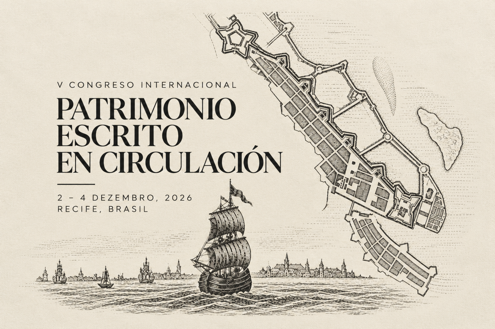

Patrimonio Escritoen Circulación

Programação científica
Consulte as atividades por dia. O programa completo, com títulos das comunicações, autores e afiliações, está disponível no PDF oficial.
Caderno de resumos
Consulte as propostas recebidas, mantendo os textos nos idiomas originais. Esta é uma versão de trabalho, sujeita à revisão editorial.
28 propostas recebidas · 29 textos, contando as versões inglesa e alemã de Martina Hacke. Baixar compilação em Word.

Local do congresso
Auditório Tobias Barreto
Faculdade de Direito do Recife (FDR)
Praça Adolfo Cirne, s/n, Boa Vista, Recife – PE, 50050-060.
Organização
Comissão organizadora
Airton Ribeiro · UFPE
Natalia Maillard Álvarez · UPO
Montserrat Cachero Vinuesa · UPO
Alberto J. Campillo Pardo · Universidad de Cádiz
Marília de Azambuja Ribeiro Machel · UFPE
Comitê científico
Airton Ribeiro · UFPE
Natalia Maillard Álvarez · UPO
Montserrat Cachero Vinuesa · UPO
Alberto J. Campillo Pardo · Universidad de Cádiz
Secretaria técnica
Rocío Molina Flores · UPO